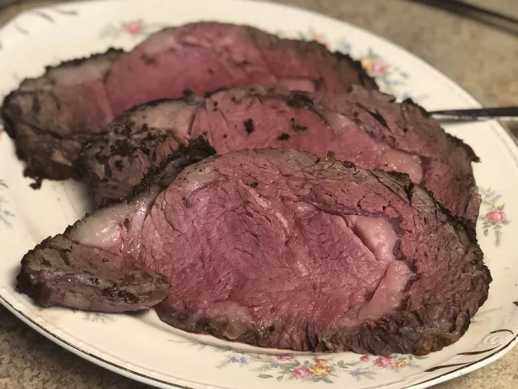

Prime Rib

Description
Prime rib is a cut of beef from the rib section of a cow. It is
usually roasted, but can also be grilled or barbecued. It is sometimes
called standing rib roast, because the rib bones are left in the meat.
Ingredients
- 1 (3 pound) standing rib roast
- 1/2 cup olive oil
- 1/2 cup soy sauce
- 1/2 cup Worcestershire sauce
- 1/4 cup lemon juice
- 1/4 cup brown sugar
- 1/4 cup minced garlic
- 1/4 cup minced onion
- 1/4 cup minced fresh parsley
Steps
- Preheat oven to 450 degrees F (230 degrees C).
- Place roast in a roasting pan, and rub with olive oil.
- pour over roast, Cover with aluminum foil.
-
Combine soy sauce, Worcestershire sauce, lemon juice, brown sugar
- Roast in the preheated oven for 30 minutes.
-
Reduce heat to 325 degrees F (165 degrees C)
-
Remove roast from oven, and let stand for 15 to 20 minutes before
carving.